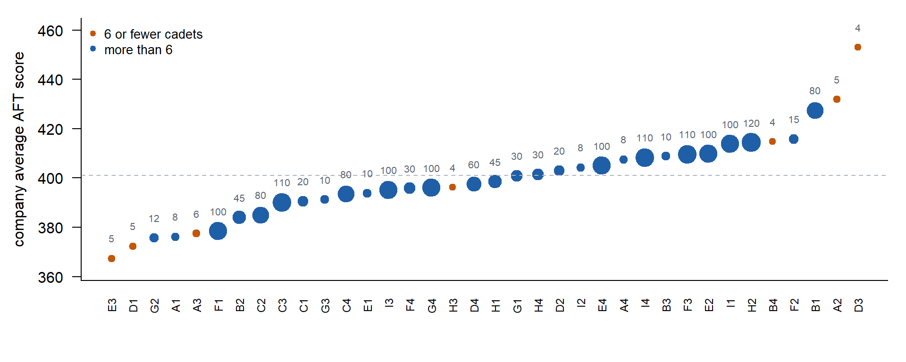
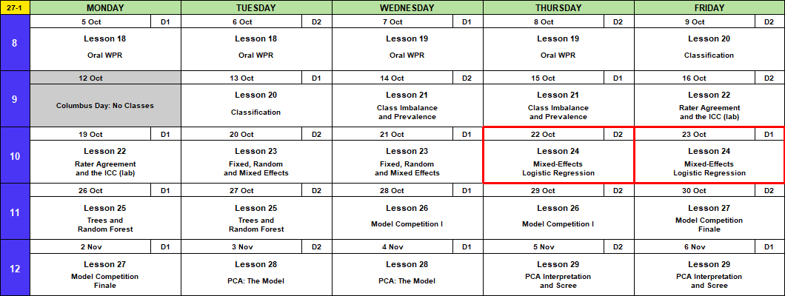
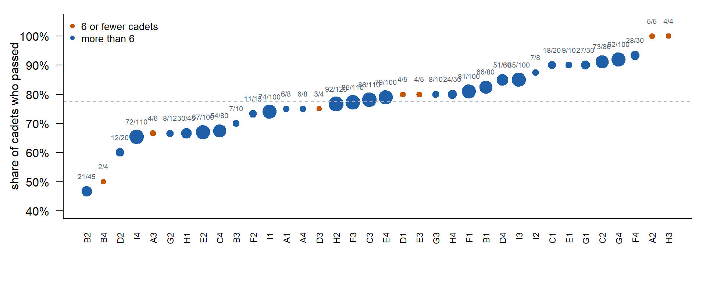
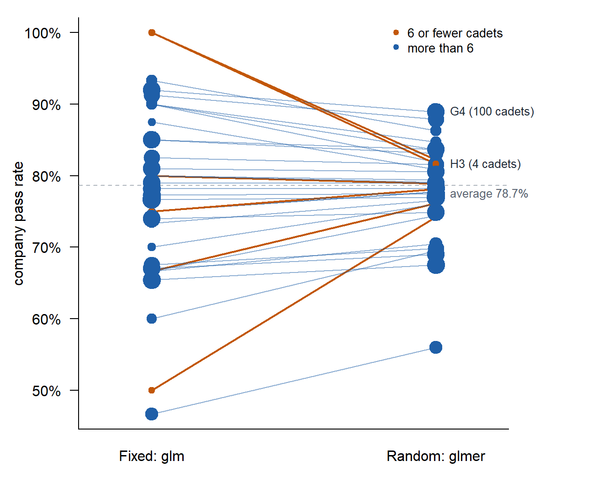
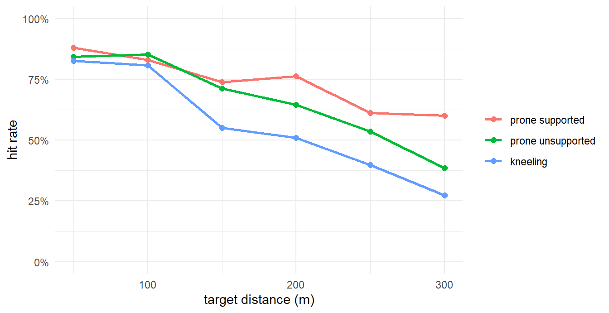

Lesson 24: Mixed-Effects Logistic Regression
Calendar

Admin
- Lesson 27
- Block 3 quiz (Lessons 20 to 23)
- Memo 4 due in class, hard copy
- Capstone Milestone 2: methodology and preliminary results. Due 2359 Friday 13 November, 60 points.
- 2 to 4 pages that motivate and defend your method, with a short look at results
- A plebe in MA103 should understand at least 80% of it
- Capstone final presentation. Lessons 37 and 38, 3 to 8 December, 100 points.
- I’m here through Lesson 29, 6 November.
TEE Slots
All TEE periods run 0730 to 1100. Find your name under your section.
NoteMA376 A1 14 (15 cadets)
| P1: Tue 15 Dec (8) | P4: Wed 16 Dec (7) |
|---|---|
| Anteen | Baron |
| Carroll | Fountain |
| Cole | Hardwick |
| Fonte | Rebolledo |
| Konopka | Shioutakon |
| Ploetz | Smith |
| Sun | Youmans |
| Toth |
NoteMA376 BC1 15 (14 cadets)
| P1: Tue 15 Dec (5) | P4: Wed 16 Dec (9) |
|---|---|
| Bode | Best |
| Lee | De La Torre |
| Ndiaye | Laub |
| O’Keefe | Loughman |
| Russell | Miranda |
| Nguyen | |
| Plummer | |
| Ward | |
| Weisenborn |
NoteMA376 BC2 16 (15 cadets)
| P1: Tue 15 Dec (4) | P4: Wed 16 Dec (11) |
|---|---|
| Gray | Applegate |
| Harris | Cannon |
| Van Kley | Ivey |
| Zhai | Johnson |
| Kendig | |
| Marino | |
| Myers | |
| Silverman | |
| Song | |
| Tullier | |
| Wittrock |
What We Did: Lesson 23
AFT scores, 36 companies. Which company is the most fit?
The number over each dot is how many cadets tested. A random intercept for company:
\[y_{ij} = \mu + u_j + \varepsilon_{ij}, \qquad u_j \sim N(0, \sigma^2_u), \qquad \varepsilon_{ij} \sim N(0, \sigma^2)\]
library(lme4)
aft <- read.csv("data/L23_aft_companies.csv")
fit3 <- lmer(score ~ 1 + (1 | company), data = aft)
summary(fit3)Linear mixed model fit by REML ['lmerMod']
Formula: score ~ 1 + (1 | company)
Data: aft
REML criterion at convergence: 17330.1
Scaled residuals:
Min 1Q Median 3Q Max
-2.99943 -0.64960 -0.03483 0.67039 2.90049
Random effects:
Groups Name Variance Std.Dev.
company (Intercept) 125.6 11.21
Residual 1685.3 41.05
Number of obs: 1684, groups: company, 36
Fixed effects:
Estimate Std. Error t value
(Intercept) 399.704 2.374 168.3\[\hat y_{ij} = \hat\mu + \hat u_j = \hat\mu + w_j\,(\bar y_j - \hat\mu), \qquad w_j = \frac{n_j}{n_j + \lambda}, \qquad \lambda = \frac{\hat\sigma^2}{\hat\sigma^2_u} = \frac{1685.3}{125.6} = 13.4\]
D3: \(n_j = 4\), \(\bar y_j = 453.0\).
\[w = \frac{4}{4 + 13.4} = 0.23, \qquad \hat y = 399.7 + 0.23\,(453.0 - 399.7) = 411.9\]
D3’s 4 cadets keep 23% of their gap. Small companies shrink toward the overall average.
What We’re Doing: Lesson 24
But What About Data Like This?
Indoor Obstacle Course Test (IOCT) results, same 36 companies, same number of cadets in each. Pass or fail.
company: A1 to I4pass: 1 = passed, 0 = failed- 1,684 cadets. 77% passed.
ioct <- read.csv("data/L24_ioct_companies.csv")
head(ioct) company pass
1 A1 1
2 A1 0
3 A1 1
4 A1 1
5 A1 1
6 A1 0
Passed over tested above each dot. H3 and A2 passed everyone, on 4 and 5 cadets.
Which company is best at the IOCT?
Fixed Company Effect: Logistic Regression
Lesson 9: model the log-odds of passing. One dummy per company.
\[\log\frac{p_{ij}}{1 - p_{ij}} = \beta_0 + \beta_j\]
- \(p_{ij}\): the chance cadet \(i\) in company \(j\) passes
- \(\beta_0\): company A1’s log-odds (the baseline)
- \(\beta_j\): how far company \(j\)’s log-odds sit from A1
fitF <- glm(pass ~ company, family = binomial, data = ioct)
round(summary(fitF)$coefficients, 3) # the coefficient table, 3 decimals Estimate Std. Error z value Pr(>|z|)
(Intercept) 1.099 0.816 1.346 0.178
companyA2 13.467 394.776 0.034 0.973
companyA3 -0.405 1.190 -0.341 0.733
companyA4 0.000 1.155 0.000 1.000
companyB1 0.452 0.868 0.521 0.603
companyB2 -1.232 0.869 -1.417 0.156
companyB3 -0.251 1.069 -0.235 0.814
companyB4 -1.099 1.291 -0.851 0.395
companyC1 1.099 1.106 0.994 0.320
companyC2 1.246 0.907 1.373 0.170
companyC3 0.178 0.849 0.209 0.834
companyC4 -0.368 0.851 -0.432 0.666
companyD1 0.288 1.384 0.208 0.835
companyD2 -0.693 0.935 -0.741 0.459
companyD3 0.000 1.414 0.000 1.000
companyD4 0.636 0.893 0.712 0.476
companyE1 1.099 1.333 0.824 0.410
companyE2 -0.390 0.844 -0.463 0.644
companyE3 0.288 1.384 0.208 0.835
companyE4 0.226 0.853 0.265 0.791
companyF1 0.351 0.855 0.411 0.681
companyF2 -0.087 1.004 -0.087 0.931
companyF3 0.125 0.848 0.148 0.883
companyF4 1.540 1.097 1.405 0.160
companyG1 1.099 1.018 1.079 0.281
companyG2 -0.405 1.021 -0.397 0.691
companyG3 0.288 1.137 0.253 0.800
companyG4 1.344 0.896 1.500 0.134
companyH1 -0.405 0.876 -0.463 0.643
companyH2 0.091 0.845 0.108 0.914
companyH3 13.467 441.372 0.031 0.976
companyH4 0.288 0.935 0.308 0.758
companyI1 -0.053 0.848 -0.062 0.950
companyI2 0.847 1.345 0.630 0.529
companyI3 0.636 0.863 0.737 0.461
companyI4 -0.460 0.841 -0.547 0.585\[\hat p_{ij} = \frac{e^{\hat\beta_0 + \hat\beta_j}}{1 + e^{\hat\beta_0 + \hat\beta_j}}\]
G4: \(\hat\beta_0 + \hat\beta_{G4} = 1.10 + 1.34 = 2.44\)
\[\hat p = \frac{e^{2.44}}{1 + e^{2.44}} = 0.920\]
H3: \(\hat\beta_0 + \hat\beta_{H3} = 1.10 + 13.47 = 14.57\)
\[\hat p = \frac{e^{14.57}}{1 + e^{14.57}} = 1.000\]
- Each company’s \(\hat p\) is its own pass rate: G4 92/100, H3 4/4.
- H3: \(\hat\beta = 13.47\), standard error 441. Every cadet passed, so the best log-odds is \(+\infty\).
glmstops when it gives up. - Answer: H3 and A2, at 100%, on 4 and 5 cadets.
Random Company Effect: glmer
Lesson 23’s random intercept, on the log-odds scale:
\[\log\frac{p_{ij}}{1 - p_{ij}} = \mu + u_j, \qquad u_j \sim N(0, \sigma^2_u)\]
- \(\mu\): the log-odds for an average company
- \(u_j\): how far company \(j\)’s log-odds sit from \(\mu\)
- \(\sigma^2_u\): how much companies differ
- No \(\varepsilon_{ij}\): pass or fail is the noise.
glmer(): generalized linear mixed-effects regression. lmer plus a family, like lm to glm.
fitR <- glmer(pass ~ 1 + (1 | company), family = binomial, data = ioct)
summary(fitR)Generalized linear mixed model fit by maximum likelihood (Laplace
Approximation) [glmerMod]
Family: binomial ( logit )
Formula: pass ~ 1 + (1 | company)
Data: ioct
AIC BIC logLik -2*log(L) df.resid
1766.9 1777.8 -881.5 1762.9 1682
Scaled residuals:
Min 1Q Median 3Q Max
-2.8338 0.3529 0.4868 0.5467 0.8864
Random effects:
Groups Name Variance Std.Dev.
company (Intercept) 0.2532 0.5032
Number of obs: 1684, groups: company, 36
Fixed effects:
Estimate Std. Error z value Pr(>|z|)
(Intercept) 1.3048 0.1183 11.03 <2e-16 ***
---
Signif. codes: 0 '***' 0.001 '**' 0.01 '*' 0.05 '.' 0.1 ' ' 1- Random effects:
companyis \(\hat\sigma^2_u = 0.253\). NoResidualrow. - Fixed effects:
(Intercept)is \(\hat\mu = 1.305\). - 2 parameters: \(\mu\), \(\sigma^2_u\).
\[\hat p_{ij} = \frac{e^{\hat\mu + \hat u_j}}{1 + e^{\hat\mu + \hat u_j}}\]
ranef() gives each \(\hat u_j\):
ranef(fitR)$company[c("G4", "H3"), , drop = FALSE] (Intercept)
G4 0.7783914
H3 0.1861507glmer solves for each \(\hat u_j\); how it does that is in the next section.
G4: \(\hat\mu + \hat u_{G4} = 1.305 + 0.778 = 2.083\)
\[\hat p = \frac{e^{2.083}}{1 + e^{2.083}} = 0.889\]
H3: \(\hat\mu + \hat u_{H3} = 1.305 + 0.186 = 1.491\)
\[\hat p = \frac{e^{1.491}}{1 + e^{1.491}} = 0.816\]
predict(fitR, data.frame(company = c("G4", "H3")), type = "response") 1 2
0.8892618 0.8162257 - G4: 100 cadets, raw 92.0%, model 88.9%. Barely moves.
- H3: 4 cadets, raw 100%, model 81.6%. Pulled toward the average, 78.7%.
How Much Does Each Company Shrink?
An approximation. Because of the logistic curve, algebra can’t solve for \(\hat u_j\) directly. R uses Lesson 23’s formula over and over, updating \(\lambda\) each time, until the answer stops moving (box below). Our formula is the first pass. It lands within 1.7 points of glmer for every company.
\[\hat p_{ij} \approx \bar p + \hat u_j\]
\[\hat u_j = w_j\left(\frac{k_j}{n_j} - \bar p\right)\]
\[w_j = \frac{n_j}{n_j + \lambda}\]
\[\lambda = \frac{\text{noise}}{\text{signal}} = \frac{\bar p(1 - \bar p)}{\hat\sigma^2_u\,\big[\bar p(1 - \bar p)\big]^2}\]
- \(\bar p\): the average company’s pass rate, from \(\hat\mu\)
- \(\hat u_j\): how far company \(j\) sits from \(\bar p\), in pass-rate points (
ranef()reports it in log-odds) - \(k_j / n_j\): company \(j\)’s own pass rate, \(k_j\) passed out of \(n_j\)
- \(w_j\): the trust in the company’s own rate, between 0 (ignore it) and 1 (take all of it)
- \(\lambda\): noise (one cadet’s pass/fail variance) over signal (how much companies differ, \(\hat\sigma^2_u\) converted from log-odds to pass rates)
1. \(\bar p\). \(\hat\mu = 1.305\) is log-odds. Convert:
\[\bar p = \frac{e^{1.305}}{1 + e^{1.305}} = 0.787\]
2. \(\lambda\). Where we are: \(\hat u_j\) needs \(w_j\), and \(w_j\) needs \(\lambda\).
\[\hat u_j = w_j\left(\frac{k_j}{n_j} - \bar p\right), \qquad w_j = \frac{n_j}{n_j + \lambda}, \qquad \lambda = \frac{\text{noise}}{\text{signal}} = \frac{\bar p(1 - \bar p)}{\hat\sigma^2_u\,\big[\bar p(1 - \bar p)\big]^2}\]
Noise: a pass/fail has variance \(p(1-p)\). Signal: \(\hat\sigma^2_u = 0.253\) from the summary.
\[\text{noise} = \bar p(1 - \bar p) = 0.787 \times 0.213 = 0.168\]
\[\text{signal} = \hat\sigma^2_u\,\big[\bar p(1 - \bar p)\big]^2 = 0.253 \times 0.168^2 = 0.0071\]
\[\lambda = \frac{0.168}{0.0071} = 23.5\]
- Signal is an SD of 0.084: real companies differ by about 8 percentage points.
- A company needs about 24 cadets before its own pass rate gets half the weight.
3. H3. 4 of 4 passed.
\[\frac{k_j}{n_j} = \frac{4}{4} = 1.000\]
\[w = \frac{4}{4 + 23.5} = 0.15\]
\[\hat u = 0.15\,(1.000 - 0.787) = 0.031\]
\[\hat p \approx 0.787 + 0.031 = 0.818\]
4. G4. 92 of 100 passed.
\[\frac{k_j}{n_j} = \frac{92}{100} = 0.920\]
\[w = \frac{100}{100 + 23.5} = 0.81\]
\[\hat u = 0.81\,(0.920 - 0.787) = 0.108\]
\[\hat p \approx 0.787 + 0.108 = 0.895\]
glmer: 0.816 for H3, 0.889 for G4. Every company is within 1.7 points.- H3 keeps 15% of its gap. G4 keeps 81%.
5. The second pass. The first pass set \(\lambda\) at \(\bar p\) for every company. The second pass starts by recomputing \(\lambda\) at each company’s own first-pass estimate: same formula, \(\hat p_j\) in place of \(\bar p\).
\[\hat p_{ij} \approx \bar p + \hat u_j, \qquad \hat u_j = w_j\left(\frac{k_j}{n_j} - \bar p\right), \qquad w_j = \frac{n_j}{n_j + \lambda_j}, \qquad \lambda_j = \frac{\hat p_j(1 - \hat p_j)}{\hat\sigma^2_u\,\big[\hat p_j(1 - \hat p_j)\big]^2}\]
For G4:
\[\lambda_{G4} = \frac{0.895(1 - 0.895)}{0.253\,\big[0.895(1 - 0.895)\big]^2} = 41.9\]
Then \(w_j\) and \(\hat u_j\) again, and repeat until \(\hat u_j\) stops moving. glmer ends at \(\lambda = 40.1\) for G4 (box below, step 3).
Add 24 average cadets. Multiply out and regroup: the company’s cadets plus \(\lambda\) stand-in cadets who pass at \(\bar p\).
\[\hat p_{H3} \approx \frac{4 + 23.5(0.787)}{4 + 23.5} = 0.818, \qquad \hat p_{G4} \approx \frac{92 + 23.5(0.787)}{100 + 23.5} = 0.895\]
H3’s 4 for 4 is swamped by the stand-ins. G4’s 100 cadets barely notice them.
Shrinkage

- Small companies get pulled toward the average. Large companies barely move.
- Same shrinkage as Lesson 23, on pass rates.
| Rank | Fixed: company (passed) | Pass rate | Random: company (passed) | Pass rate |
|---|---|---|---|---|
| 1 | A2 (5/5) | 100.0% | G4 (92/100) | 88.9% |
| 2 | H3 (4/4) | 100.0% | C2 (73/80) | 87.9% |
| 3 | F4 (28/30) | 93.3% | F4 (28/30) | 86.3% |
| 4 | G4 (92/100) | 92.0% | G1 (27/30) | 84.7% |
| 5 | C2 (73/80) | 91.2% | I3 (85/100) | 83.7% |
Answer: G4. 100 cadets, a high pass rate that holds up.
Project: Rifle Qualification
The range OIC hands you the scores from fall rifle qualification. One row per round fired.
shooter: S01 to S48position: prone supported, prone unsupported, kneelingdistance: target distance, 50 to 300 metershit: 1 = hit, 0 = miss- Most shooters fired 40 rounds. Lightning closed the range before 6 finished; they fired 10.
The OIC’s questions: how much do distance and position matter, and who are the best shooters?
library(tidyverse)
rifle <- read_csv("data/L24_rifle_qual.csv", show_col_types = FALSE) |>
mutate(position = factor(position, levels = c("prone supported", "prone unsupported", "kneeling")),
dist100 = distance / 100) # distance in hundreds of metersExplore
1. What is one row? How many shooters, and how many rounds did each fire?
NoteAnswer 1
glimpse(rifle)Rows: 1,740
Columns: 5
$ shooter <chr> "S01", "S01", "S01", "S01", "S01", "S01", "S01", "S01", "S01"…
$ position <fct> prone supported, prone supported, prone supported, prone supp…
$ distance <dbl> 200, 300, 150, 100, 150, 100, 150, 200, 50, 100, 50, 250, 300…
$ hit <dbl> 1, 0, 1, 1, 0, 0, 1, 0, 1, 1, 1, 0, 0, 1, 0, 1, 1, 1, 1, 1, 1…
$ dist100 <dbl> 2.0, 3.0, 1.5, 1.0, 1.5, 1.0, 1.5, 2.0, 0.5, 1.0, 0.5, 2.5, 3…rifle |> count(shooter) |> count(n, name = "shooters")# A tibble: 2 × 2
n shooters
<int> <int>
1 10 6
2 40 42One row is one round. 48 shooters: 42 fired 40, 6 fired 10. Rounds are grouped in shooters.
2. What is the hit rate overall, by distance, and by position?
NoteAnswer 2
rifle |> summarise(hit_rate = mean(hit))# A tibble: 1 × 1
hit_rate
<dbl>
1 0.676rifle |>
group_by(distance, position) |>
summarise(hit_rate = mean(hit), .groups = "drop") |>
ggplot(aes(distance, hit_rate, color = position)) +
geom_line(linewidth = 1) + geom_point(size = 2) +
scale_y_continuous(labels = scales::percent, limits = c(0, 1)) +
labs(x = "target distance (m)", y = "hit rate", color = NULL) +
theme_minimal()
68% overall. Hits fall as distance grows, and fall from prone supported to prone unsupported to kneeling.
3. What is each shooter’s hit rate? Who looks best? Is that a fair ranking?
NoteAnswer 3
rifle |>
group_by(shooter) |>
summarise(rounds = n(), hits = sum(hit), hit_rate = mean(hit), avg_distance = mean(distance)) |>
arrange(desc(hit_rate)) |>
slice_head(n = 5)# A tibble: 5 × 5
shooter rounds hits hit_rate avg_distance
<chr> <int> <dbl> <dbl> <dbl>
1 S17 10 10 1 170
2 S41 10 10 1 140
3 S22 40 37 0.925 185
4 S02 10 9 0.9 175
5 S13 40 35 0.875 172.S17 and S41, 10 for 10. Not fair, two reasons:
- They fired 10 rounds. A perfect 10 is easy to get by luck (Lesson 23).
- Shooters drew different targets. A hit at 300 m kneeling is worth more than a hit at 50 m prone.
Model
4. Which variables should be fixed effects and which random? Why?
NoteAnswer 4
| Variable | Effect | Why |
|---|---|---|
distance |
Fixed | We want its effect: how much harder is each 100 m? Its values are the ones we care about. |
position |
Fixed | Only three positions, and we want each one’s effect. |
shooter |
Random | 48 cadets are a sample of all cadets. We care how much shooters differ, and we want to predict a shooter not in the data. |
Fixed and random in one model: a mixed model.
5. Write the model.
NoteAnswer 5
Round \(i\) fired by shooter \(j\):
\[\log\frac{p_{ij}}{1 - p_{ij}} = \beta_0 + \beta_1\,\text{dist}_{ij} + \beta_2\,\text{unsupported}_{ij} + \beta_3\,\text{kneeling}_{ij} + u_j, \qquad u_j \sim N(0, \sigma^2_u)\]
- \(\beta_0\): log-odds of a hit for an average shooter, prone supported, at 0 m
- \(\beta_1\): change in log-odds per 100 m
- \(\beta_2, \beta_3\): prone unsupported and kneeling, each against prone supported
- \(u_j\): shooter \(j\)’s skill, how far above or below an average shooter
6. Fit it with glmer. Interpret each fixed effect as an odds ratio.
NoteAnswer 6
fit_rifle <- glmer(hit ~ dist100 + position + (1 | shooter), family = binomial, data = rifle)
summary(fit_rifle)Generalized linear mixed model fit by maximum likelihood (Laplace
Approximation) [glmerMod]
Family: binomial ( logit )
Formula: hit ~ dist100 + position + (1 | shooter)
Data: rifle
AIC BIC logLik -2*log(L) df.resid
1925.9 1953.2 -957.9 1915.9 1735
Scaled residuals:
Min 1Q Median 3Q Max
-4.2048 -0.7875 0.3995 0.6433 2.8322
Random effects:
Groups Name Variance Std.Dev.
shooter (Intercept) 0.4503 0.671
Number of obs: 1740, groups: shooter, 48
Fixed effects:
Estimate Std. Error z value Pr(>|z|)
(Intercept) 2.87243 0.19717 14.568 < 2e-16 ***
dist100 -0.91371 0.07187 -12.714 < 2e-16 ***
positionprone unsupported -0.44369 0.13906 -3.191 0.00142 **
positionkneeling -0.95333 0.13769 -6.924 4.4e-12 ***
---
Signif. codes: 0 '***' 0.001 '**' 0.01 '*' 0.05 '.' 0.1 ' ' 1
Correlation of Fixed Effects:
(Intr) dst100 pstnpu
dist100 -0.747
pstnprnunsp -0.300 0.053
positnknlng -0.356 0.122 0.377exp(fixef(fit_rifle)) # odds ratios (Intercept) dist100 positionprone unsupported
17.6800079 0.4010319 0.6416649
positionkneeling
0.3854535 - Distance: each 100 m multiplies the odds of a hit by \(e^{-0.914} = 0.40\).
- Prone unsupported: \(e^{-0.444} = 0.64\) times the odds of prone supported.
- Kneeling: \(e^{-0.953} = 0.39\) times the odds of prone supported.
- All for the same shooter: \(u_j\) is held fixed.
7. How much do shooters differ? Find the ICC.
NoteAnswer 7
On the log-odds scale there is no Residual row. A logistic model’s built-in noise has variance \(\pi^2 / 3 = 3.29\), so it stands in for \(\sigma^2\):
\[\text{ICC} = \frac{\hat\sigma^2_u}{\hat\sigma^2_u + \pi^2 / 3} = \frac{0.450}{0.450 + 3.29} = 0.120\]
About 12% of the variation in hitting, on the log-odds scale, is shooter to shooter. The rest is round to round.
Use It
8. Predict the chance of a hit at 300 m kneeling for an average shooter and for S22.
NoteAnswer 8
Average shooter, \(u_j = 0\):
\[2.872 - 0.914(3) - 0.953 = -0.822, \qquad \hat p = \frac{e^{-0.822}}{1 + e^{-0.822}} = 0.305\]
S22, \(\hat u = 1.182\):
\[-0.822 + 1.182 = 0.360, \qquad \hat p = \frac{e^{0.360}}{1 + e^{0.360}} = 0.589\]
new <- tibble(shooter = c("new shooter", "S22"), dist100 = 3,
position = factor("kneeling", levels = levels(rifle$position)))
predict(fit_rifle, new, type = "response", allow.new.levels = TRUE) 1 2
0.3053301 0.5889384 9. Rank the shooters by \(\hat u_j\). Who is best? Why not S17? S13 and S15 both hit 35 of 40. Why do they differ?
NoteAnswer 9
ranef(fit_rifle)$shooter |>
rownames_to_column("shooter") |>
rename(u_hat = `(Intercept)`) |>
arrange(desc(u_hat)) |>
slice_head(n = 5) shooter u_hat
1 S22 1.1816218
2 S15 0.9653990
3 S13 0.8372588
4 S17 0.7629350
5 S29 0.7026167- Best: S22, 37 of 40.
- S17: 10 for 10, \(\hat u = 0.763\). Few rounds, so shrunk toward average.
- S15 over S13: same hits, but S15’s targets averaged 185 m against 172.5 m. The fixed effects credit the harder targets.
10. Fit glm(hit ~ dist100 + position), ignoring the shooter. Compare its coefficients to the mixed model’s.
NoteAnswer 10
fit_glm <- glm(hit ~ dist100 + position, family = binomial, data = rifle)
round(cbind(glm = coef(fit_glm), glmer = fixef(fit_rifle)), 3) glm glmer
(Intercept) 2.588 2.872
dist100 -0.821 -0.914
positionprone unsupported -0.410 -0.444
positionkneeling -0.878 -0.953glm’s effects are smaller: -0.821 per 100 m against -0.914.glmeranswers “for one shooter, how much does 100 m cost?”glmanswers “across all shooters mixed together.” Mixing good and bad shooters flattens the curve.glmalso treats 1740 rounds as independent. They are not: one shooter’s rounds share a skill.
11. Tell the OIC.
NoteAnswer 11
Each 100 m cuts the odds of a hit to about 40%, and kneeling cuts them to about 39% of prone supported. Shooters differ, about 12% of the variation. The best shooter is S22, 37 of 40. S17 and S41 went 10 for 10 before lightning closed the range: too few rounds to rank them first.